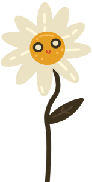
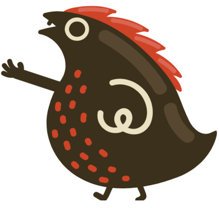

МОРКВИНКА
комфортне середовище для вашого малюка
Ми створили найкращі умови для сприятливої атмосфери розвитку дітей.
Відвідати садочок10%
ЗНИЖКА
новим клієнтам
Ми створили найкращі умови для сприятливої атмосфери розвитку дітей.
Відвідати садочокЗНИЖКА
новим клієнтам

Екологічні іграшки, сучасні меблі, відеоспостереження, авторські навчальні методики, регулярні прогулянки – все це забезпечує гармонійний розвиток усіх сфер життєдіяльності малечі.
Англійська мова, музика, шахи, розвиваючі заняття, підготовка до школи, кулінарні майстер-класи, уроки творчості - усе це входить у вартість садочку.
Ми дбаємо про збалансоване та якісне харчування Вашої дитини. Страви від наших кухарів неодмінно сподобаються Вашим діткам. Також регулярно проходять кулінарні майстер-класи!
Садочок має освітню ліцензію та працює згідно зі всіма законодавчими нормами та вимогами
Невеликі групи за віком гарантують комфортні умови навчання та розвитку
Безпека понад усе!
08:00 - 08:40 Прийом діток
08:40 - 09:00 Ранкова зарядка
09:00 - 09:30 Сніданок
09:40 - 10:20 Заняття
10:20 - 11:20 Прогулянка на свіжому повітрі
11:20 - 11:30 Перекус
11:30 - 12:10 Заняття
12:10 - 12:30 Вільна гра
12:30 - 13:00 Обід
13:00 - 15:30 Тиха година
15:30 - 16:00 Пробудження після сну
16:00 - 16:20 Перекус
16:20 - 17:00 Заняття
17:00 - 17:30 Самостійна гра
17:30 - 18:00 Вечеря
18:00 - 18:40 Прогулянка
18:40 - 19:00 Повернення діток додому
*Режим дня може змінюватись залежно від віку дітей, погодних умов і пори року
- Харчування 5-разове 100 ₴ / день
- Річний внесок 2000 ₴
*Знижка діє лише для нових клієнтів
Запис на адаптацію- Харчування 3-разове 80 ₴ / день
- Річний внесок 2000 ₴
*Знижка діє лише для нових клієнтів
Запис на адаптацію- Харчування 5-разове 100 ₴ / день
- Річний внесок 2000 ₴
*Знижка діє лише для нових клієнтів
Запис на адаптаціюДитина ходить в садочок, та на ранній розвиток в Морквинці. Дуже професійні вихователі, тепла атмосфера. Дитина з радістю відвідує :) дуже вдячні колективу!
Вперше на заняттях раннього розвитку (нам 1,2). Чудова Інна, цікаве заняття. Заклад чистий, сучасний та з гарно методичною та розвиваючою базою. Рекомендуємо
Вожу ребенка с 8 месяцев на раннее развитие. Я в восторге. Методист Анна замечательная. Большое вам спасибо.
Воджу дитину з 8 місяців на ранній розвиток. Я в захваті. Методист Анна чудова. Велике вам спасибі.